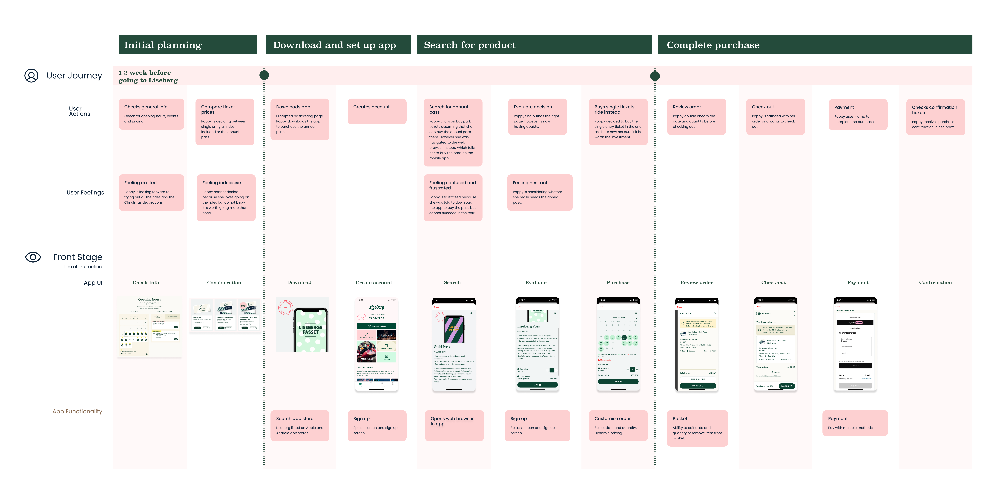
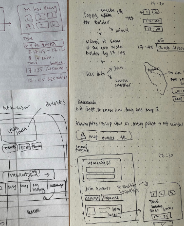
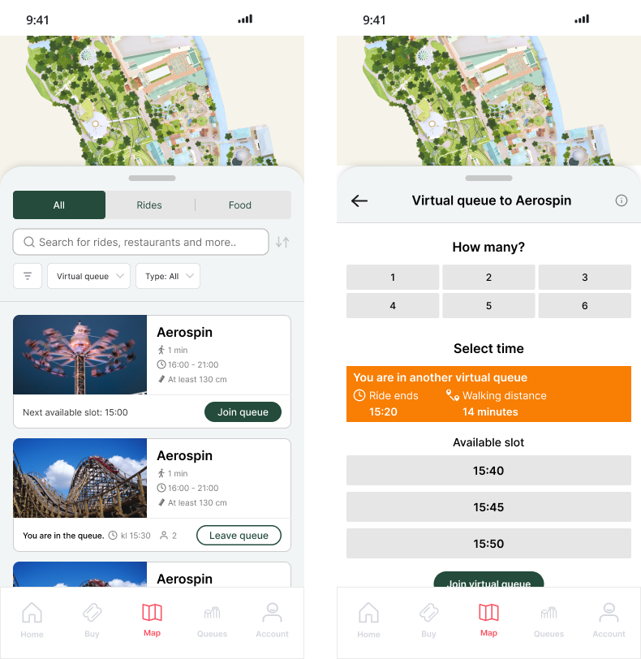
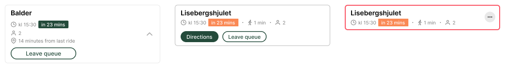

Crafting an unforgettable amusement park adventure with user-centered design
- PROJECT
- Liseberg — Virtual Queue
- YEAR
- 2024
- PLATFORM
- Mobile app
- METHODS
- UX research, interaction design, prototyping, usability testing

From surveys and talking to friends who use the Liseberg app, I learned that the main reasons for downloading it are to purchase annual passes and to make use of the theme park's virtual queue.
Unlock opportunities within the virtual queue feature to elevate the customer's in-park experience.
If customers spend less time in physical queues and go on more rides, they would have a better overall experience.

Top insights from usability testing
- 1
iPhone users have difficulty returning to the previous screen each time they are redirected to the web browser — which happens often, because the app isn't optimized for mobile use.
- 2
Many users mentioned the app is too text-heavy, making it difficult to find the information they're looking for.
- 3
They also wished they could get more detailed information about the rides they want to join the queue for.
If customers can spend less time in physical queues and go on more rides, their overall experience will improve — meaning the feature has to be more functional and useful.
How might we help users pick the right queue?
How might we help users get to the ride easily?
Brainstormed solutions
I sketched solutions on paper, focusing on the interactions and making sure the required capabilities are met.

- Easily see all virtual queues I'm in.
- See estimated walking time to the attraction from the last ride.
- Join more queues as soon as an available slot comes up.
- …and more.
Refined sketches into detailed mockups of the main screens
I created mockups mainly for usability testing.

Users appreciated the concept, but found the information unclear
- Most interpreted the displayed time incorrectly — e.g. reading it as the ride's total run time rather than the time to enter.
- It was unclear that the ~20 minutes represented the buffer time between the previous and next ride.
Rewrite the HMW statements
After some consideration, I realized conflicting bookings don't have to be an issue — we could simply hide the slots that conflict with the user's current booking.
A more useful question: how might we inform users of the time it takes to reach their next ride from their current location?
Home
- See virtual queue info directly on the home page.
- See program highlights by date.
- Updated information architecture & bottom navigation.
- Dedicated page for buying tickets and virtual queue.
- Combined "My Liseberg" and "Settings".
.png)
Virtual queue slideout
.png)
- Opted for a top slideout.
- Always show all details instead of expand / collapse.
- Moved "leave queue" and "get directions" into "more" — not a frequent action.
Join virtual queue
Entry point: the map and the queue tab.

Queue card item
Like the queue card on the home tab, users can get directions to the attraction and leave the queue.

✓ Impact — utilises less space while displaying more useful information.
Join virtual queue
Initially I focused on when the last ride would end. As noted, that issue is solved by hiding conflicting times — so the final design instead informs the user of the distance to the attraction from their current location.

You've reached the bottom — thank you for reading.